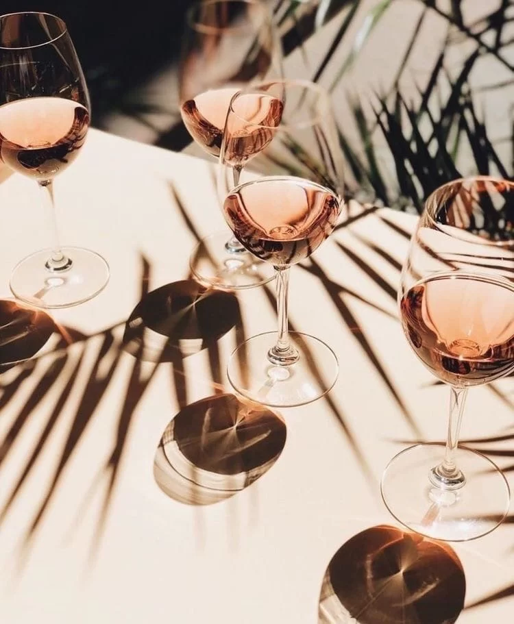

Весь мир в бокале вина
Р. Фейнман
Вино – это благородный напиток, любимый многими на протяжении не одного десятка лет, который создается путем ферментации виноградного сока. О вине можно говорить бесконечно, так как количество сортов и видов настолько огромно, что перечислять их всех не представляется возможным. Однако существует классификация вин по категориям исходя из способа создания, сырьевой базы, количества сахарной и спиртовой основы, цвета.
